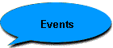

|
Core Monkeys have participated in every interfaction tournament to date, including Faction Wars One, Faction Wars Two, Buster Nights, and Buster Nights Two. During FW1, we were the new faction on the block, but by FW2, we were a serious competitor with a little help from Dragon Riders. After that, the format had changed to Buster Nights and we've been playing more for fun.
The Core Monkeys run an ongoing members-only tournament, Monkey Masters.
|